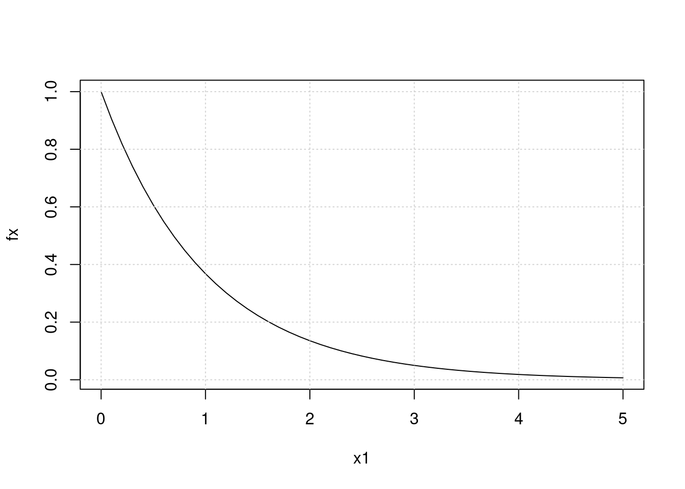
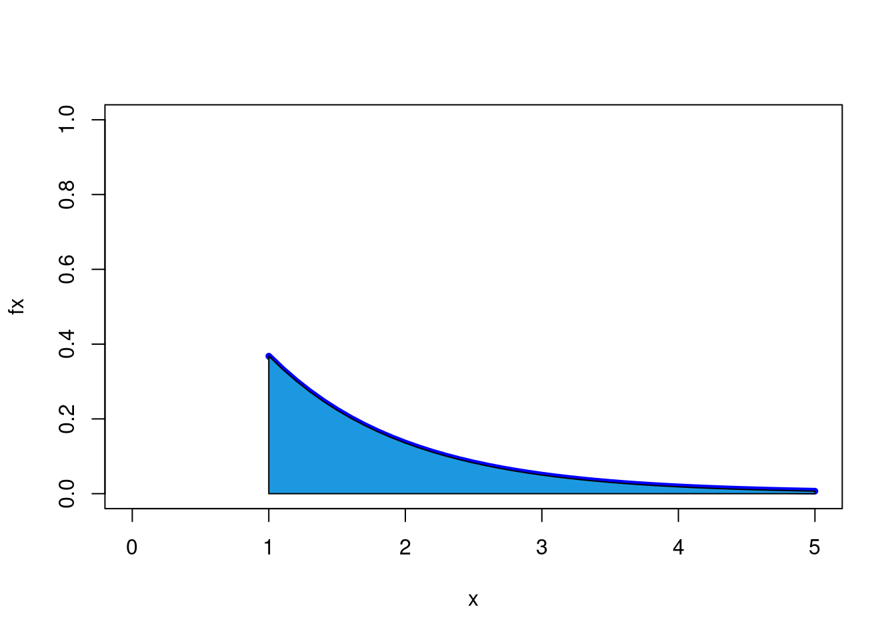

Suponga que \(f_X(x)=exp(-x)\) para \(0<x\) , \(0\) en cualquier otro caso. Determine:
fx1=function(x){exp(-x)}
x1=seq(0,5,0.1)
fx=fx1(x1)
plot(x1,fx, type="l")
grid()
x=seq(0,5, by=0.1)
fx=fx1(x)
x.1=c(0,x,5)
fx.1=c(0,fx,0)
plot(x,fx, type="l", ylim=c(0,1),col="blue", lwd=5, xlim=c(0,5)) # forma 2
polygon(x.1,fx.1,col = "#1b98e0") integrate(fx1,0,Inf) # verificacion de que f(x) es una funcion de densidad de probabilidad## 1 with absolute error < 5.7e-05x=seq(1,5, by=0.1)
fx=fx1(x)
x.1a=c(1,x,5)
fx.1a=c(0,fx,0)
plot(x,fx, type="l", ylim=c(0,1),col="blue", lwd=5, xlim=c(0,5)) # forma 2
polygon(x.1a,fx.1a,col = "#1b98e0") 
integrate(fx1,1,Inf) # P(X>1)## 0.3678794 with absolute error < 2.1e-05\(P(1 < X < 2.5)\)
\(P(X = 3)\)
\(P(X<4)\)
\(Me\)
\(Q_{1}\)
\(Q_{3}\)
\(E[X]\)
fxx=function(x){x*exp(-x)}
integrate(fxx,0,Inf)## 1 with absolute error < 6.4e-06fxx=function(x){x*exp(-x)}
Ex=integrate(fxx,0,Inf) # valor esperado de X. primer momento
fxx=function(x){x^2*exp(-x)}
Ex2=integrate(fxx,0,Inf) # segundo momento de X
Vx=Ex2$value-Ex$value^2 # varianza de X
Vx ## [1] 1Suponga que X es una variable aleatoria continua con funcio de distribucion acumulada
\[f(x)=\left\{\begin{matrix}0&\mbox{si }x<0\\ 2x & \mbox{si } 0 < x < 5 \\ 1 & \mbox{si } 5 \leq x \end{matrix}\right. \]
\(P(X < 2)\)
\(P(X = 1.5)\)
\(P( X > 3)\)
\(P(0.5 < X <2.7)\)
Para una variable aleatoria con funcion de distribucion:
\[f(x)=\left\{\begin{matrix}\dfrac{(2x+1)}{25}& x=0,1,2,3,4.\\ & \\ 0 & \mbox{para cualquier otro caso} \end{matrix}\right.\]
fx3=function(x){(2*x+1)/25}
x=0:4
plot(x,fx3(x), pch=19)sum(fx3(x)) # verificacion de que f(x) es una funcion de distribucion de probabilidad## [1] 1\(P(X=4)\)
\(P(X\leq 1)\)
P(2 X < 4)$
\(E[X]\)
\(V[X]\)
Para una variable aleatoria con funcion de distribucion de probabilidad \(f(x)=(3/4)(1/4)^{x}\), para $x=0,1,2,3,……. $
x=0:10
plot(x,fx4(x), pch=19)\(P(X=2)\)
\(P(X\leq 2)\)
\(P(X < 2)\)
\(P(X > 2)\)
\(E[X]\)
\(V[X]\)
\[\binom{25}{x}0.80^x 0.20^{25-x}\]
fx=function(x){choose(25,x)*0.80^x*(1-0.80)^(25-x)}
x=0:25
f.x=fx(x)
plot(x,f.x, pch=19)sum(f.x) # verificacion de que f(x) es una fun.de distribucion de probabilidad## [1] 1fx(20) # P(X=20)## [1] 0.1960151sum(f.x[0:20]) # P(X<=20)## [1] 0.3833106